EE564 - Design of Electrical Machines
Contents
- Project-1: Transformer Design for X-Rays
- Name: Mesut Uğur
- ID: 1626753
- INTRODUCTION
- PROJECT SPECIFICATIONS
- DESIGN INPUTS
- CORE TYE AND MATERIAL SELECTION
- OPERATING CONDITIONS
- DESIGN PROCEDURE
- Core Data-1
- Number of Turns
- Selection of wire
- Fill Factor
- Windings Resistances
- Copper Loss
- Core Loss
- Total Loss
- Efficiency
- Results for the 1st Set of Cores
- Observations From the Results of the 1st Core Set (EE)
- Core Data-2
- Number of Turns
- Conductor
- Fill Factor
- Windings Resistances
- Copper Loss
- Core Loss
- Total Loss
- Efficiency
- Results for the 2nd Set of Cores
- Observations From the Results of the 1st Core Set (EE)
- Efficiency Comparison Between the Two Sets of Cores
- CORE SELECTION
- SELECTED CORE PROPERTIES
- DESIGN WITH THE SELECTED CORE
- Inputs
- Turn number calculation
- Corrected flux density
- Skin Effect [11]
- Conductor
- Fill factor
- Winding geometry
- Geometry Decision
- Fill Factor (Corrected)
- copper loss
- Core loss
- Total Loss
- Efficiency
- Mass calculation
- Temperature rise and Cooling
- Equivalent Circuit Parameters
- CONCLUSIONS
- REFERENCES
Project-1: Transformer Design for X-Rays
Name: Mesut Uğur
ID: 1626753
INTRODUCTION
In this project, we are asked to design a high frequency, high voltage transformer for an X-Ray generator. X-ray devices are commonly used by radiographers to acquire an x-ray image of the inside of an object (as in medicine or non-destructive testing) but they are also used in sterilization or fluorescence [1]. An x-ray generator is composed of a main circuit and a filament circuit [2,3]. The main circuit is responsible for supplying power to the x-ray tube.
For the ionisation in the x-ray tube, high voltage is required. The voltage boost operation is achieved via a high frequency transformer (along with a DC/AC converter in the front and an AC/DC converter at the end). A high frequency transformer is preferred to reduce the size. In this project, design of a high frequency (100 kHz) transformer for a 30 kW X-ray generator is achieved.
This report is composed of the following sections:
- Project specifications are given
- Core type and material selection is done
- Operating conditions (flux density etc.) are selected
- For two sets of cores, basic design is achieved for comparison
- The core is selected and the design for the selected core is achieved
- The following results are obtained: Turn numbers, Transformer geometry and fill factor, Corrected flux density, Losses and efficiency, Mass and insulation, Temperature rise and cooling, Parasitic effects, Resultant equivalent circuit,
- The design is evaluated and the design work is concluded
- References are provided
PROJECT SPECIFICATIONS
The x-ray generator transformer to be designed has the following specifications:
Single-phase, high frequency, high voltage
Primary Winding Voltage ± 417 V (peak to peak 834 V for pulsing)
Secondary Winding Voltage ± 12.5 kV (peak to peak 25 kV for pulsing)
Rated Power 30 kW (for maximum 100 millisecond)
Switching Frequency Minimum 100 kHz
Ambient Temperature 0-40 °C
DESIGN INPUTS
Vin_peak = 417; % volts Vpri_peak = Vin_peak*4/pi; % volts Vpri_rms = Vpri_peak/sqrt(2); % volts Vout_peak = 12500; % volts Vsec_peak = Vout_peak*4/pi; % volts Vsec_rms = Vsec_peak/sqrt(2); % volts Pout = 30000; % watts Ipri_rms = Pout/Vpri_rms; % amps Isec_rms = Pout/Vsec_rms; % amps
CORE TYE AND MATERIAL SELECTION
Usually, there are two types of transformers: Core type and Shell type. In high frequency applications as the flux is divided in the outer limbs so that core loss is reduced. Commonly double E (or EE) type cores are preferred. In this project, the first design is based on this type of cores.
As the core material, ferrite core is a common choice for high frequency applications, as they offer very low coercivity and hence hysteresis loss (and core loss) is low. Moreover, they do not need a laminated structure as their eddy current loss is relatively low [4].
For frequencies between 10 kHz and 3 MHz, manganeze-zinc ferrite cores are suggested whereas for frequencies between above 3 MHz, nickel-zinc ferrites are commonly used. The disadvantage of using a ferrite core is basically low saturation flux density (usually 500 mT max), however they offer a cheaper solution with relatively low core losses. Another candidate for a high frequency transformer is nanocrystalline core. They have high saturation flux density (usually above 2 Tesla), low core loss (comparable to ferrite cores). On the other hand, they are relatively expensive [5]. Properties of several cores are shown in the Figure below [6]:
I = imread('core_properties.png'); figure; imshow(I); title('Types of cores and their properties','FontSize',18,'FontWeight','Bold');
In this project, nickel-zinc ferrite core is selected from MAGNETICS with EE geometry [7]. U type cores are also included in the iterative core design procedure.
As the core material (apart from being ferrite), Magnetics offer several types [7,8]: J, W, F, L, P, R and T material. In common mode chokes, J and W materials are suggested whereas in power transformers for converters and inverters, F,L, P, R, T materials are suggested. The basic properties are higher permeability, lower loss at high temperatures etc. The P material is selected due to its higher permeability and higher saturation flux density.
OPERATING CONDITIONS
First of all, the selectec core material has the following properties:
Inital permeability (relative): 2500 Saturation flux density: 480 mT Curie temperature: 210 0C
The selected operating conditions are:
Efficiency at rated conditions: % 98
Operating maximum flux density: 0.3 Tesla
Operating frequency: 100 kHz
Fill factor (max): 0.5
Operating temperatıre (max): 60 0C
DESIGN PROCEDURE
This part of the report describes how the design procedure is followed by using several different cores among which the most suitable will be selected.
Core Data-1
The first set of the cores is composed of E cores data of which are shown below [7]:
elements = 17; core = 1:17; core_length = [76.7,98.4,97,67.1,97,145,77,88.9,124,123,107,110,147,149,137,184,274]; %mm core_area = [127,107,178,177,233,236,149,234,353,420,337,248,540,683,368,392,738]; %mm^2 core_volume = [9780,10500,17300,11900,22700,34200,11500,20800,44000,52000,36000,27200,79000,102000,50300,72300,202000]; %mm^3 area_product = [1.26,1.65,3.55,1.36,4.22,6.36,1.88,3.3,9.78,12.1,6.98,5.74,23.5,23.3,15,31.6,90.6]*1e4; %mm^4 core_weight = [49,52,87,60,114,164,57,103,212,255,179,135,410,495,250,357,980]; %grams window_area = area_product./core_area; % mm^2
Operating point
flux_density = 0.3; % Tesla flux = flux_density*core_area/1e6; % Weber frequency = 100e3; % Hz
Number of Turns
Calculation of number of turns from induced voltage
Npri = round(Vpri_rms./(4.44*frequency*flux)); Nsec = round(Vsec_rms./(4.44*frequency*flux));
Selection of wire
From the AWG wire table, the most suitable conductor is selected by the frequency limitation due to skin effect. The table is shown in the following figure [9].
I = imread('awg_wire.png'); figure; imshow(I); title('AWG Wire Table','FontSize',18,'FontWeight','Bold');
The selected conductor properties are given as folloing:
conductor_diameter = 0.40386; % mm conductor_area = (conductor_diameter/2)^2*pi; % mm^2 ohms_per_km = 133.8568; % ohm/km current_rating = 0.361; % Amps
By using the required current information, the required number of strands on each side are calculated by:
strand_primary = ceil(Ipri_rms/current_rating); strand_secondary = ceil(Isec_rms/current_rating);
Fill Factor
Fill factor is calculated without considering the insulation of wires
area_pri_winding = Npri*strand_primary*conductor_area; % mm^2 area_sec_winding = Nsec*strand_secondary*conductor_area; % mm^2 fill_factor = (area_pri_winding + area_sec_winding)./window_area;
Windings Resistances
Mean length per turn is approximately calculated assuming the core is square shaped as:
mean_length_turn = 4*sqrt(core_area)*1.2/10; % cm % The total length and resiatance of each winding: length_pri = Npri.*mean_length_turn; % cm ohms_km_pri = ohms_per_km/strand_primary; resistance_pri = ohms_km_pri*length_pri/1000; % ohms length_sec = Nsec.*mean_length_turn; % cm ohms_km_sec = ohms_per_km/strand_secondary; resistance_sec = ohms_km_sec*length_sec/1000; % ohms
Copper Loss
copper_loss_pri = Ipri_rms^2*resistance_pri; copper_loss_sec = Isec_rms^2*resistance_sec; copper_loss = copper_loss_pri+copper_loss_sec;
Core Loss
Core loss is calculated by using the curve fitting equation provided by Magnetics catalog as (P material @80 Cdegrees)[10]:
a = 0.0434;
c = 1.63;
d = 2.62;
f = 100; % kHz
Core loss is calculated for the harmonic components up to 31st along with the fundamantal (100 kHz) component.
harmonic = 1:2:31; total = numel(harmonic);
The RMS voltage at each harmonic component is calculated by using the harmonic spectrum of a square wave:
voltage_rms = (4/pi)*(1/sqrt(2))*Vin_peak./harmonic;
For each core in the set, each harmonic component of core loss is calculated and then summed. Flux density is found by using the RMS voltage and turn number information.
core_harmonic_loss = zeros(elements,total); core_loss = zeros(1,elements); for l = 1:elements for k = 1:total flux_density_harmonic = voltage_rms(k)/(4.44*Npri(l)*frequency*harmonic(k)*core_area(l)/1e6); PL_h = a*(f*harmonic(k))^c*(flux_density_harmonic*10)^d; core_harmonic_loss(l,k) = PL_h*core_volume(l)/1e6; end core_loss(1,l) = sum(core_harmonic_loss(l,:)); end
Total Loss
total_loss = copper_loss + core_loss;
Efficiency
efficiency = Pout./(total_loss+Pout);
The efficiency data is stored for further comparison
efficiency1 = efficiency;
Results for the 1st Set of Cores
Primary turn number, secondary turn number and fill factor
figure; subplot(3,1,1); plot(core,Npri,'k- ','Linewidth',1.5); grid on; set(gca,'FontSize',12); xlabel('Core','FontSize',10,'FontWeight','Bold'); ylabel('Primary Turn Number','FontSize',10,'FontWeight','Bold'); ylim([0 20]); set(gca,'YTick',0:4:20); subplot(3,1,2); plot(core,Nsec,'k- ','Linewidth',1.5); grid on; set(gca,'FontSize',12); xlabel('Core','FontSize',10,'FontWeight','Bold'); ylabel('Secondary Turn Number','FontSize',10,'FontWeight','Bold'); ylim([0 600]); set(gca,'YTick',0:120:600); subplot(3,1,3); plot(core,fill_factor,'k- ','Linewidth',1.5); grid on; set(gca,'FontSize',12); xlabel('Core','FontSize',10,'FontWeight','Bold'); ylabel('Fill Factor','FontSize',10,'FontWeight','Bold'); ylim([0 1]); set(gca,'YTick',0:0.2:1);
Primary resiatance, secondary resistance
figure; subplot(2,1,1); plot(core,resistance_pri,'k- ','Linewidth',1.5); grid on; set(gca,'FontSize',12); xlabel('Core','FontSize',10,'FontWeight','Bold'); ylabel('Primary Resistance (Ohms)','FontSize',10,'FontWeight','Bold'); subplot(2,1,2); plot(core,resistance_sec,'k- ','Linewidth',1.5); grid on; set(gca,'FontSize',12); xlabel('Core','FontSize',10,'FontWeight','Bold'); ylabel('Secondary Resistance (Ohms)','FontSize',10,'FontWeight','Bold');
Copper loss, core loss
figure; subplot(2,1,1); plot(core,copper_loss,'k- ','Linewidth',1.5); grid on; set(gca,'FontSize',12); xlabel('Core','FontSize',10,'FontWeight','Bold'); ylabel('Copper Loss (W)','FontSize',10,'FontWeight','Bold'); subplot(2,1,2); plot(core,core_loss,'k- ','Linewidth',1.5); grid on; set(gca,'FontSize',12); xlabel('Core','FontSize',10,'FontWeight','Bold'); ylabel('Core Loss (W)','FontSize',10,'FontWeight','Bold');
Total loss, efficiency
figure; subplot(2,1,1); plot(core,total_loss,'k- ','Linewidth',1.5); grid on; set(gca,'FontSize',12); xlabel('Core','FontSize',10,'FontWeight','Bold'); ylabel('Total Loss (W)','FontSize',10,'FontWeight','Bold'); subplot(2,1,2); plot(core,100*efficiency,'k- ','Linewidth',1.5); grid on; set(gca,'FontSize',12); xlabel('Core','FontSize',10,'FontWeight','Bold'); ylabel('Efficiency (%)','FontSize',10,'FontWeight','Bold');
Losses alltogether
figure; plot(core,core_loss,'k-o','Linewidth',1.5); hold on; plot(core,copper_loss,'r-o','Linewidth',1.5); hold on; plot(core,total_loss,'b-o','Linewidth',1.5); hold off; grid on; set(gca,'FontSize',12); xlabel('Core','FontSize',10,'FontWeight','Bold'); ylabel('Loss (W)','FontSize',10,'FontWeight','Bold'); legend('Core Loss','Copper Loss','Total Loss');
Observations From the Results of the 1st Core Set (EE)
First of all, a fill factor above 50% is not feasible since the insulation of wires have not been considered yet. This requires relatively low number of turns and wider core window. In other words, a core with a larger area and window area at the same time. Among the alternatives, 16th and 17th cores are suitable. In terms of efficiency, the selected 98% limit is obtained for cores 9th to 17th among which 13th and 14th has the best performance. However, efficiency is not as an important constraint as fill factor as the transformer is to be operated in short times, core number 17 is selected among the first set.
clearvars -EXCEPT efficiency1
Core Data-2
The second set of the cores is composed of I cores data of which are shown below [7]:
elements = 14; core = 1:elements; core_length = [29.2,24.6,95.8,68.9,83.4,64.3,83.4,353,257,354,353,480,308,245]; %mm core_area = [12,11.5,39.7,80,40.4,40.3,80.8,452,450,840,905,560,645,645]; %mm^2 core_volume = [350,283,4130,4170,3370,2590,6740,160000,115000,297000,319000,268800,199000,158000]; %mm^3 area_product = [0.02,0.01,0.63,0.78,0.57,0.32,1.13,91.4,45.8,173,185,286,121,60.7]*1e4; %mm^4 core_weight = [1.8,1.5,19,29,17,13,34,800,600,1490,1600,1360,988,784]; %grams window_area = area_product./core_area;
Reassignment of known variables
Inputs
Vin_peak = 417; % volts Vpri_peak = Vin_peak*4/pi; % volts Vpri_rms = Vpri_peak/sqrt(2); % volts Vout_peak = 12500; % volts Vsec_peak = Vout_peak*4/pi; % volts Vsec_rms = Vsec_peak/sqrt(2); % volts Pout = 30000; % watts Ipri_rms = Pout/Vpri_rms; % amps Isec_rms = Pout/Vsec_rms; % amps
Operating point
flux_density = 0.3; % Tesla flux = flux_density*core_area/1e6; % Weber frequency = 100e3; % Hz
Number of Turns
Calculation of number of turns from induced voltage
Npri = round(Vpri_rms./(4.44*frequency*flux)); Nsec = round(Vsec_rms./(4.44*frequency*flux));
Conductor
conductor_diameter = 0.40386; % mm conductor_area = (conductor_diameter/2)^2*pi; % mm^2 ohms_per_km = 133.8568; % ohm/km current_rating = 0.361; % Amps
By using the required current information, the required number of strands on each side are calculated by:
strand_primary = ceil(Ipri_rms/current_rating); strand_secondary = ceil(Isec_rms/current_rating);
Fill Factor
area_pri_winding = Npri*strand_primary*conductor_area; % mm^2 area_sec_winding = Nsec*strand_secondary*conductor_area; % mm^2 fill_factor = (area_pri_winding + area_sec_winding)./window_area;
Windings Resistances
mean_length_turn = 4*sqrt(core_area)*1.2/10; % cm length_pri = Npri.*mean_length_turn; % cm ohms_km_pri = ohms_per_km/strand_primary; resistance_pri = ohms_km_pri*length_pri/1000; % ohms length_sec = Nsec.*mean_length_turn; % cm ohms_km_sec = ohms_per_km/strand_secondary; resistance_sec = ohms_km_sec*length_sec/1000; % ohms
Copper Loss
copper_loss_pri = Ipri_rms^2*resistance_pri; copper_loss_sec = Isec_rms^2*resistance_sec; copper_loss = copper_loss_pri+copper_loss_sec;
Core Loss
a = 0.0434; c = 1.63; d = 2.62; f = 100; % kHz harmonic = 1:2:31; total = numel(harmonic); voltage_rms = (4/pi)*(1/sqrt(2))*Vin_peak./harmonic; core_harmonic_loss = zeros(elements,total); core_loss = zeros(1,elements); for l = 1:elements for k = 1:total flux_density_harmonic = voltage_rms(k)/(4.44*Npri(l)*frequency*harmonic(k)*core_area(l)/1e6); PL_h = a*(f*harmonic(k))^c*(flux_density_harmonic*10)^d; core_harmonic_loss(l,k) = PL_h*core_volume(l)/1e6; end core_loss(l) = sum(core_harmonic_loss(l,:)); end
Total Loss
total_loss = copper_loss + core_loss;
Efficiency
efficiency = Pout./(total_loss+Pout);
The efficiency data is stored for further comparison
efficiency2 = efficiency; efficiency2(15:17) = 0;
Results for the 2nd Set of Cores
Primary turn number, secondary turn number and fill factor
figure; subplot(3,1,1); plot(core,Npri,'k- ','Linewidth',1.5); grid on; set(gca,'FontSize',12); xlabel('Core','FontSize',10,'FontWeight','Bold'); ylabel('Primary Turn Number','FontSize',10,'FontWeight','Bold'); ylim([0 20]); set(gca,'YTick',0:4:20); subplot(3,1,2); plot(core,Nsec,'k- ','Linewidth',1.5); grid on; set(gca,'FontSize',12); xlabel('Core','FontSize',10,'FontWeight','Bold'); ylabel('Secondary Turn Number','FontSize',10,'FontWeight','Bold'); ylim([0 600]); set(gca,'YTick',0:120:600); subplot(3,1,3); plot(core,fill_factor,'k- ','Linewidth',1.5); grid on; set(gca,'FontSize',12); xlabel('Core','FontSize',10,'FontWeight','Bold'); ylabel('Fill Factor','FontSize',10,'FontWeight','Bold'); ylim([0 1]); set(gca,'YTick',0:0.2:1);
Primary resiatance, secondary resistance
figure; subplot(2,1,1); plot(core,resistance_pri,'k- ','Linewidth',1.5); grid on; set(gca,'FontSize',12); xlabel('Core','FontSize',10,'FontWeight','Bold'); ylabel('Primary Resistance (Ohms)','FontSize',10,'FontWeight','Bold'); subplot(2,1,2); plot(core,resistance_sec,'k- ','Linewidth',1.5); grid on; set(gca,'FontSize',12); xlabel('Core','FontSize',10,'FontWeight','Bold'); ylabel('Secondary Resistance (Ohms)','FontSize',10,'FontWeight','Bold'); ylim([0 120]); set(gca,'YTick',0:20:120);
Copper loss, core loss
figure; subplot(2,1,1); plot(core,copper_loss,'k- ','Linewidth',1.5); grid on; set(gca,'FontSize',12); xlabel('Core','FontSize',10,'FontWeight','Bold'); ylabel('Copper Loss (W)','FontSize',10,'FontWeight','Bold'); ylim([0 1000]); set(gca,'YTick',0:200:1000); subplot(2,1,2); plot(core,core_loss,'k- ','Linewidth',1.5); grid on; set(gca,'FontSize',12); xlabel('Core','FontSize',10,'FontWeight','Bold'); ylabel('Core Loss (W)','FontSize',10,'FontWeight','Bold');
Total loss, efficiency
figure; subplot(2,1,1); plot(core,total_loss,'k- ','Linewidth',1.5); grid on; set(gca,'FontSize',12); xlabel('Core','FontSize',10,'FontWeight','Bold'); ylabel('Total Loss (W)','FontSize',10,'FontWeight','Bold'); ylim([0 2000]); set(gca,'YTick',0:400:2000); subplot(2,1,2); plot(core,100*efficiency,'k- ','Linewidth',1.5); grid on; set(gca,'FontSize',12); xlabel('Core','FontSize',10,'FontWeight','Bold'); ylabel('Efficiency (%)','FontSize',10,'FontWeight','Bold');
Losses alltogether
figure; plot(core,core_loss,'k-o','Linewidth',1.5); hold on; plot(core,copper_loss,'r-o','Linewidth',1.5); hold on; plot(core,total_loss,'b-o','Linewidth',1.5); hold off; grid on; set(gca,'FontSize',12); xlabel('Core','FontSize',10,'FontWeight','Bold'); ylabel('Loss (W)','FontSize',10,'FontWeight','Bold'); legend('Core Loss','Copper Loss','Total Loss'); ylim([0 2000]); set(gca,'YTick',0:400:2000);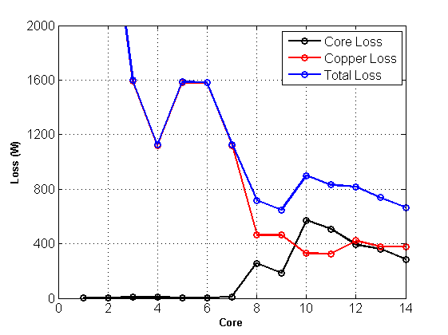
Observations From the Results of the 1st Core Set (EE)
In terms of fill factor, cores from 8th to 14th are suitable. This was expected since this core set is composed of U shaped cores. This gives a variety of candidates. In terms of efficiency, cores from 8th to 14th has copper and core losses close to each other which yields the highest efficiency as expected. Among the alternatives, core 9 and core 14 are the most suitable in terms of efficiency.
Efficiency Comparison Between the Two Sets of Cores
figure; core = 1:17; plot(core,100*efficiency1,'r-o','Linewidth',1.5); hold on; plot(core,100*efficiency2,'b-o','Linewidth',1.5); hold off; grid on; set(gca,'FontSize',12); xlabel('Core','FontSize',10,'FontWeight','Bold'); ylabel('Efficiency (%)','FontSize',10,'FontWeight','Bold'); ylim([90 100]);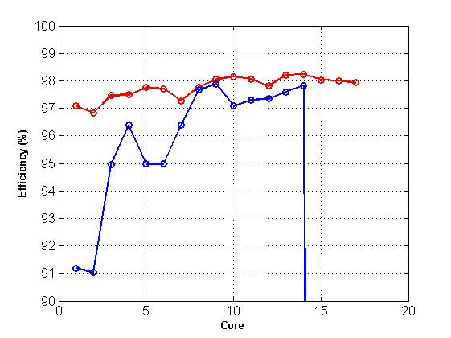
CORE SELECTION
The efficiency comparison and the fill factors suggest that, core number 17th of the first set (EE cores) is suitable. In this selection, the amount of copper to be used is also tried to be minimized. When EE cores and U cores are compared, it is also observed that similar performance is obtained with less amount of core material (core mass) with double E cores. Transformer cost is therefore minimized in terms of both copper and core.
SELECTED CORE PROPERTIES
EE Ferrite core from magnetics
49928E-C
material: P-type ferrite
clear all; I = imread('selected_core.png'); figure; imshow(I); title('Selected Core','FontSize',18,'FontWeight','Bold'); I = imread('selected_core_geo.png'); figure; imshow(I); title('Selected Core Geometry and Dimensions','FontSize',18,'FontWeight','Bold');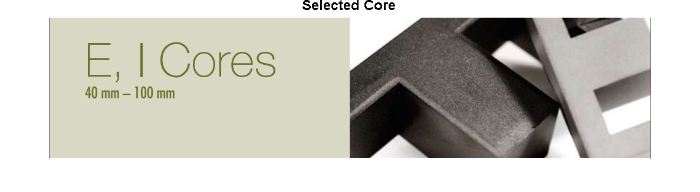 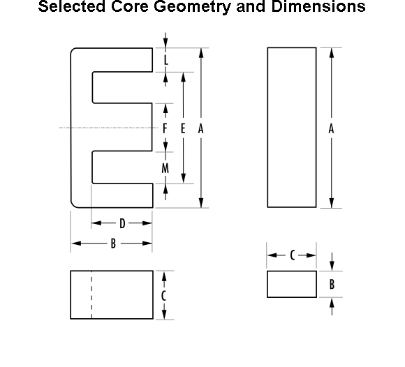
Core Dimensions (all in mm)
dimA = 100.3; dimB = 59.4; dimC = 27.5; dimD = 46.85; dimE = 72; dimF = 27.5; dimL = 13.75; dimM = 22.65;
Selected Core Data
AL = 6773; % nH/turn core_length = 274; % mm core_area = 738; % mm^2 core_volume = 202e3; % mm^3 area_product = 90.6; % cm^4 window_area = area_product*1e4/core_area; % mm^2 fprintf('Window area is %g mm^2\n',window_area);
Window area is 1227.64 mm^2
DESIGN WITH THE SELECTED CORE
Inputs
Vin_peak = 417; % volts Vpri_peak = Vin_peak*4/pi; % volts Vpri_rms = Vpri_peak/sqrt(2); % volts Vout_peak = 12500; % volts Vsec_peak = Vout_peak*4/pi; % volts Vsec_rms = Vsec_peak/sqrt(2); % volts Pout = 30000; % watts Ipri_rms = Pout/Vpri_rms; % amps Isec_rms = Pout/Vsec_rms; % amps
Turn number calculation
flux_density = 0.3; % Tesla flux = flux_density*core_area/1e6; % Weber fprintf('The peak flux is %g Wb\n',flux); frequency = 100e3; Npri = round(Vpri_rms/(4.44*frequency*flux)); Nsec = round(Vsec_rms/(4.44*frequency*flux)); fprintf('Primary turn number is %g turns\n',Npri); fprintf('Secondary turn number is %g turns\n',Nsec);
The peak flux is 0.0002214 Wb Primary turn number is 4 turns Secondary turn number is 114 turns
Corrected flux density
flux_density = Vpri_rms/(4.44*Npri*frequency*core_area/1e6); % Tesla fprintf('Actual peak flux density is %g Tesla\n',flux_density);
Actual peak flux density is 0.286439 Tesla
Skin Effect [11]
copper_resistivity = 1.7e-8; % Ohm*m copper_permeability = 1.256629e-6; % H/m angular_frequency = 2*pi*frequency; % rad/sec skin_depth = sqrt(copper_resistivity*2/(angular_frequency*copper_permeability)); fprintf('Skin depth of Copper @ %g Hz is %g mm\n',frequency,skin_depth*1000);
Skin depth of Copper @ 100000 Hz is 0.207513 mm
Conductor
Conductor properties AWG#26
conductor_diameter = 0.40386; % mm conductor_area = (conductor_diameter/2)^2*pi; % mm^2 ohms_per_km = 133.8568; % ohm/km current_rating = 0.361; % Amps fprintf('Each conductor has the capability of %g Amps\n',current_rating);
Each conductor has the capability of 0.361 Amps
The wire selection is based on the so-called AWG wire tables, and the design is validated using skin depth calculation. As the skin depth is larger than the conductor radius, no skin effect will be observed.
Fill factor
strand_primary = ceil(Ipri_rms/current_rating); fprintf('There should be %g strands at the primary turns to be able to supply %g amount of current\n',strand_primary,Ipri_rms); strand_secondary = ceil(Isec_rms/current_rating); fprintf('There should be %g strands at the secondary turns to be able to supply %g amount of current\n',strand_secondary,Isec_rms); area_pri_winding = Npri*strand_primary*conductor_area; % mm^2 area_sec_winding = Nsec*strand_secondary*conductor_area; % mm^2 fill_factor = 2*(area_pri_winding + area_sec_winding)/window_area; fprintf('Resultant fill factor is %g \n',fill_factor);
There should be 222 strands at the primary turns to be able to supply 79.908 amount of current There should be 8 strands at the secondary turns to be able to supply 2.66573 amount of current Resultant fill factor is 0.375649
Winding geometry
Wire insulation
pri_vpt = Vin_peak/Npri;
fprintf('Voltage difference between each turn at primary is %g \n',pri_vpt);
Voltage difference between each turn at primary is 104.25
Primary is 4 turns, 1 layer, therefore no extra insulation is required.
The length of the primary winding calculation
primary_layer = 1; primary_one_turn = conductor_diameter*ceil(sqrt(strand_primary))*sqrt(2); % mm fprintf('Length of the one turn of the primary winding (crosssectional) is %g mm\n',primary_one_turn); primary_length1 = primary_one_turn*Npri/primary_layer; % mm primary_length2 = primary_one_turn*primary_layer; % mm fprintf('Vertical length of primary winding is %g mm\n',primary_length1); fprintf('Horizontal length of primary winding is %g mm\n',primary_length2);
Length of the one turn of the primary winding (crosssectional) is 8.56716 mm Vertical length of primary winding is 34.2687 mm Horizontal length of primary winding is 8.56716 mm
For the secondary (high voltage side), a more detailed design is required. In this design, layer number candidates between 1 and 10 are considered. Not only insulation, but also winding lengths will be calculated for the selected core.
A triple insulated wire will be used with the same AWG size (#26) for skin effect issues and with 7000V breakdown voltage. The diameter of one strand of wire will increase [12].
sec_vpt = Vout_peak/Nsec; fprintf('Voltage difference between each turn at secondary is %g \n',sec_vpt); layer = 1:10; turn_per_layer = zeros(1,10); max_volt_diff = zeros(1,10); diameter_with_insulation = 0.632; % mm secondary_one_turn = diameter_with_insulation*ceil(sqrt(strand_secondary))*sqrt(2); % mm fprintf('Length of the one turn of the secondary winding (crosssectional) is %g mm\n',secondary_one_turn); secondary_length1 = zeros(1,10); secondary_length2 = zeros(1,10);
Voltage difference between each turn at secondary is 109.649 Length of the one turn of the secondary winding (crosssectional) is 2.68135 mm
Core window dimensions:
core_length1 = 2*dimD; % mm fprintf('Vertical length of core is %g mm\n',core_length1); core_length2 = dimM; % mm fprintf('Horizontal length of core is %g mm\n',core_length2);
Vertical length of core is 93.7 mm Horizontal length of core is 22.65 mm
Iteration of secondary layer number. This design is based on the:
1. Is maximum voltage difference between turns lower than the isolation breakdown voltage?
2. Is the horizontal length of the core window enough for primary and secondary windings?
2. Is the vertical length of the core window enough for primary and secondary windings?
total_length1 = zeros(1,10); max_length2 = zeros(1,10); core_length1 = core_length1*ones(1,10); core_length2 = core_length2*ones(1,10); design_evaluation = zeros(1,10); for l = 1:10 turn_per_layer(l) = ceil(Nsec/layer(l)); max_volt_diff(l) = 2*turn_per_layer(l)*sec_vpt; secondary_length1(l) = secondary_one_turn*round(Nsec/layer(l)); % mm secondary_length2(l) = secondary_one_turn*layer(l); % mm total_length1(l) = secondary_length1(l)+primary_length1; max_length2(l) = max(secondary_length2(l),primary_length2); if total_length1(1) < core_length1(l) && max_length2(l) < core_length2(l) && max_volt_diff(l) < 7000 design_evaluation(l) = 1; end end
According to the design evaluation, 6, 7 and 8 layers are usable.
breakdown_voltage = 7*ones(1,10); % kV figure; plot(layer,max_volt_diff/1000,'b- ','Linewidth',1.5); hold on; plot(layer,breakdown_voltage,'r- ','Linewidth',1.5); grid on; set(gca,'FontSize',12); title('Maximum Voltage Difference vs Secondary Layer','FontSize',12,'FontWeight','Bold'); xlabel('Secondary Layer'); legend('Maximum Voltage Difference (kV)','Breakdown Voltage (kV)');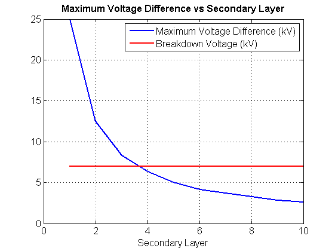
figure; plot(layer,secondary_length1,'b- ','Linewidth',1.5); hold on; plot(layer,total_length1,'r- ','Linewidth',1.5); hold on; plot(layer,core_length1,'k- ','Linewidth',1.5); hold off; grid on; set(gca,'FontSize',12); title('Vertical Lengths vs Secondary Layer'); xlabel('Secondary Layer'); legend('Secondary Vertical Length (mm)','Total Vertical Length (mm)','Core Vertical Length (mm)');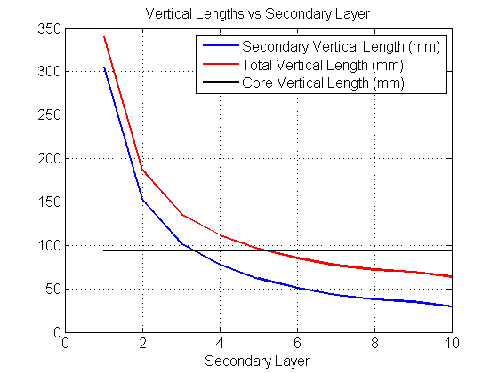
figure; plot(layer,secondary_length2,'b- ','Linewidth',1.5); hold on; plot(layer,max_length2,'r- ','Linewidth',1.5); hold on; plot(layer,core_length2,'k- ','Linewidth',1.5); hold off; grid on; set(gca,'FontSize',12); title('Vertical Lengths vs Secondary Layer'); xlabel('Secondary Layer'); legend('Secondary Horizontal Length (mm)','Maximum Horizontal Length (mm)','Core Horizontal Length (mm)');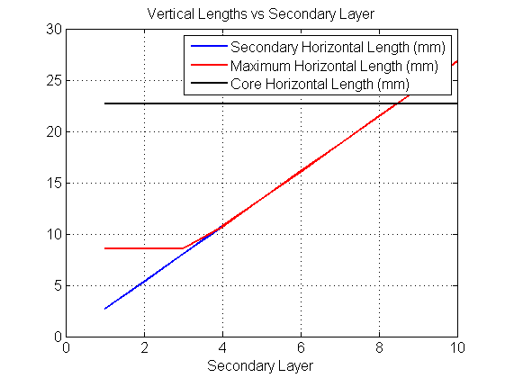
Geometry Decision
When considering leakage flux minimization, the vertical length of the coils should be maximized whereas the horizontal length of the coils should be minimized [13]. It has already been established that the primary should be single layer. For the secondary, the selectable layer numbers are 6, 7 and 8 minimum of which (6 layers) is selected.
secondary_layer = 6; clear secondary_length1; clear secondary_length2; clear total_length1; clear max_length2; secondary_length1 = secondary_one_turn*round(Nsec/secondary_layer); % mm secondary_length2 = secondary_one_turn*secondary_layer; % mm total_length1 = secondary_length1+primary_length1; max_length2 = max(secondary_length2,primary_length2); fprintf('Primary Layer number is %g\n',primary_layer); fprintf('Secondary Layer number is %g\n',secondary_layer); fprintf('Total vertical winding length is %g\n',total_length1); fprintf('Maximum horizontal winding length is %g\n',max_length2);
Primary Layer number is 1 Secondary Layer number is 6 Total vertical winding length is 85.2143 Maximum horizontal winding length is 16.0881
The drawing of the transformer geoometry is shown in the figure below:
I = imread('trafo_cizim.jpg');
figure;
imshow(I);
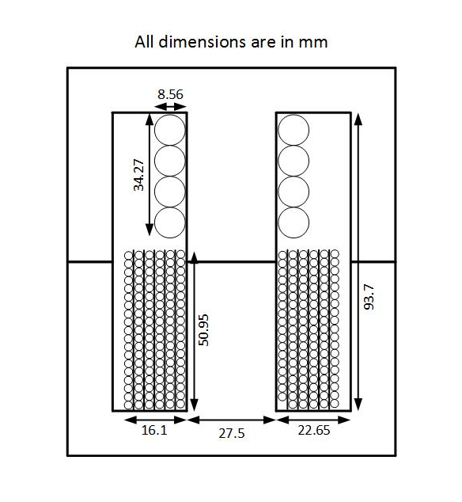 Fill Factor (Corrected)
diameter_with_insulation = 0.632; % mm wire_area_pri = (conductor_diameter/2)^2*pi; % mm^2 wire_area_sec = (diameter_with_insulation/2)^2*pi; % mm^2 area_pri_wire = Npri*strand_primary*wire_area_pri; % mm^2 area_sec_wire = Nsec*strand_secondary*wire_area_sec; % mm^2 fill_factor_corrected = 2*(area_pri_wire + area_sec_wire)/window_area; fprintf('Corrected fill factor (with insulation) is %.2g\n',fill_factor_corrected);
Corrected fill factor (with insulation) is 0.65
copper loss
mean_length_turn_pri = pi*(primary_layer*primary_one_turn+sqrt(core_area))/10; % cm fprintf('Mean Length turn for Primary is %g cm\n',mean_length_turn_pri); length_pri = Npri*mean_length_turn_pri; % cm ohms_km_pri = ohms_per_km/strand_primary; resistance_pri = ohms_km_pri*length_pri/1000; % ohms fprintf('Primary winding resistance is %g Ohms\n',resistance_pri); mean_length_turn_sec = pi*(secondary_layer*secondary_one_turn+sqrt(core_area))/10; % cm fprintf('Mean Length turn for Secondary is %g cm\n',mean_length_turn_sec); length_sec = Nsec*mean_length_turn_sec; % cm ohms_km_sec = ohms_per_km/strand_secondary; resistance_sec = ohms_km_sec*length_sec/1000; % ohms fprintf('Secondary winding resistance is %g Ohms\n',resistance_sec); copper_loss_pri = Ipri_rms^2*resistance_pri; % Watts copper_loss_sec = Isec_rms^2*resistance_sec; % Watts copper_loss = copper_loss_pri+copper_loss_sec; % Watts fprintf('Total copper loss of the transformer is %g Watts\n',copper_loss);
Mean Length turn for Primary is 11.226 cm Primary winding resistance is 0.0270751 Ohms Mean Length turn for Secondary is 13.5887 cm Secondary winding resistance is 25.9199 Ohms Total copper loss of the transformer is 357.072 Watts
Core loss
Using curve fitting P material @80 Cdegrees
a = 0.0434; c = 1.63; d = 2.62; f = 100; % kHz harmonic = 1:2:31; total = numel(harmonic); voltage_rms = (4/pi)*(1/sqrt(2))*Vin_peak./harmonic; for k = 1:total flux_density_harmonic = voltage_rms(k)/(4.44*Npri*frequency*harmonic(k)*core_area/1e6); % Tesla PL_h = a*(f*harmonic(k))^c*(flux_density_harmonic*10)^d; % Watts/cm^3 core_harmonic_loss(k) = PL_h*core_volume/1e6; % Watts end core_loss = sum(core_harmonic_loss(:)); % Watts fprintf('Total core loss of the transformer is %g Watts\n',core_loss);
Total core loss of the transformer is 257.282 Watts
Total Loss
total_loss = copper_loss + core_loss; % Watts fprintf('Total loss of the transformer is %g Watts\n',total_loss);
Total loss of the transformer is 614.355 Watts
Efficiency
efficiency = 100*Pout/(total_loss+Pout); % percent fprintf('Rated efficieny of the transformer is %.2g %%\n',efficiency);
Rated efficieny of the transformer is 98 %
Mass calculation
Core density information is used for validation.
core_mass = 980; % grams // from catalogue core_density = 4.8; % g/cm^3 core_mass2 = core_volume*core_density; % grams copper_volume_pri = length_pri*strand_primary*conductor_area*1e-2; % cm^3 copper_volume_sec = length_sec*strand_secondary*conductor_area*1e-2; % cm^3 copper_density = 8.96; % g/cm^3 copper_mass_pri = copper_volume_pri*copper_density; % grams copper_mass_sec = copper_volume_sec*copper_density; % grams copper_mass = copper_mass_pri + copper_mass_sec; % grams total_mass = (core_mass+copper_mass)/1e3; % kg fprintf('Core mass is %g grams\n',core_mass); fprintf('Total copper mass is %g grams\n',copper_mass); fprintf('Total mass of the transformer is %.2g kg\n',total_mass);
Core mass is 980 grams Total copper mass is 256.662 grams Total mass of the transformer is 1.2 kg
Temperature rise and Cooling
It is known that the transformer is to be operated 100 miliseconds at max. Although it is obvious that there will be no cooling problem, an evaluation has been done for the temperate rise and cooling requirements.
Windings
copper_specific_heat = 0.385; % J/g0C energy = (copper_loss_pri)*(1e-1); % Joules temp_rise_pri = energy/(copper_specific_heat*copper_mass_pri); % 0C energy = (copper_loss_sec)*(1e-1); % Joules temp_rise_sec = energy/(copper_specific_heat*copper_mass_sec); % 0C fprintf('Temperature rise for primary winding is %g C\n',temp_rise_pri); fprintf('Temperature rise for secondary winding is %g C\n',temp_rise_sec);
Temperature rise for primary winding is 0.392459 C Temperature rise for secondary winding is 0.336335 C
Core
Temperature rise data is not provided by Magnetics Inc. The calculation is based on specific heat of ferrite material [14].
energy = (core_loss)*(1e-1); % Joules ferrite_specific_heat = 1.046; % J/g0C temp_rise_core = energy/(ferrite_specific_heat*core_mass); % 0C fprintf('Temperature rise for core is %g C\n',temp_rise_core); fprintf('No significant temperature rise, hence no requirement for cooling');
Temperature rise for core is 0.0250988 C No significant temperature rise, hence no requirement for cooling
Equivalent Circuit Parameters
I = imread('trafo_esdeger.jpg'); figure; imshow(I); title('Equivalent Circuit of a High Frequency Transformer');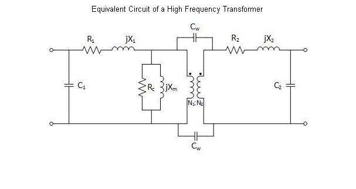
On a classical (low frequency) transformer, the equivalent circuit components are; primary and secondary winding resistances (R1, R2), primary and secondary leakage inductances (L1, L2), core loss resistance (Rc), magnetizing inductance (Lm) and an ideal transformer (N1:N2). For high frequency operations, paracitic capacitances (C1, C2 and Cw) becomes important components as shown in the Figure.
turns_ratio = Npri/Nsec;
fprintf('Turns ratio of the transformer (N1:N2) is %g \n',turns_ratio);
Turns ratio of the transformer (N1:N2) is 0.0350877
Skin effect is eliminated so that the resistances are same as DC resiatances
R1 = resistance_pri; % Ohms R2 = resistance_sec; % Ohms R2ref = R2*turns_ratio^2; % Ohms fprintf('Primary resiatance of the transformer (R1) is %g Ohms\n',R1); fprintf('Secondary resiatance of the transformer (R2) is %g Ohms\n',R2); Rc = Vpri_peak^2/core_loss; % Ohms fprintf('Core loss resiatance of the transformer (Rc) is %g Ohms\n',Rc);
Primary resiatance of the transformer (R1) is 0.0270751 Ohms Secondary resiatance of the transformer (R2) is 25.9199 Ohms Core loss resiatance of the transformer (Rc) is 1095.68 Ohms
To determine the magnetizing inductance, magnetic field intensity is calculated first. The initial relative permeability of the core is 2500. To determine the actual relative permeability, the data provided by the catalogue is used as shown in the Figures below. At 100 kHz, the permability is the same as initial permeability. The deviation due to flux density and temperature is calculated by the figure shown below.
I = imread('perm_vs_freq.png'); figure; imshow(I); title('Relative Permeability vs Frequency'); I = imread('perm_vs_temp.png'); figure; imshow(I); title('Relative Permeability vs Temperature'); I = imread('perm_vs_B.png'); figure; imshow(I); title('Relative Permeability vs Flux Density'); mur = 4000; mu0 = 4*pi*1e-7; mu = mur*mu0; % H/m H = flux_density/mu; % A/m fprintf('Relative Permeability of the Core is %g \n',mur); fprintf('Permeability of the Core is %g H/m\n',mu); fprintf('Peak magnetic field intensity is %g A/m\n',H);
Relative Permeability of the Core is 4000 Permeability of the Core is 0.00502655 H/m Peak magnetic field intensity is 56.9852 A/m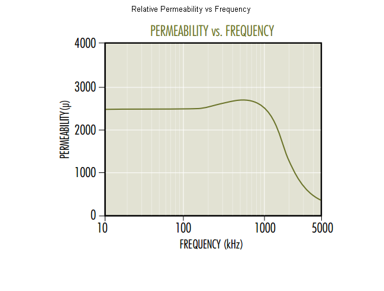 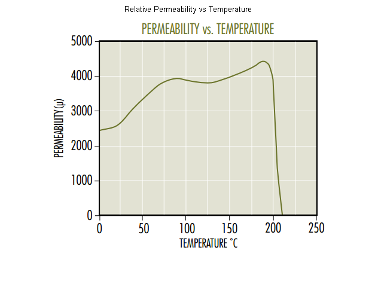 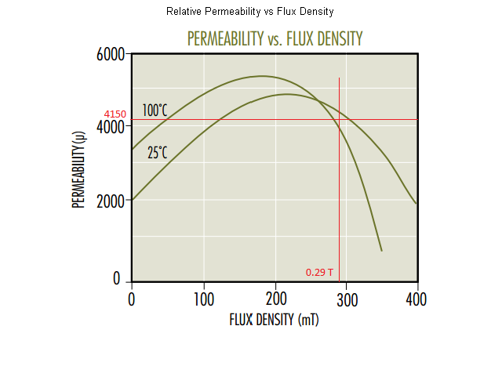
When the secondary is open circuted, all the MMF is used to magnetize the core.
mmf_drop = H*core_length/1000; % Amps magnetizing_current = mmf_drop/Npri; % Amps magnetizing_reactance = Vpri_rms/magnetizing_current; % Ohms Xm = magnetizing_reactance; % Ohms Lm = magnetizing_reactance/(2*pi*frequency); % Henry fprintf('Magnetizing current is %.2g Amps\n',magnetizing_current); fprintf('Magnetizing inductance of the transformer (Lm) is %g uH\n',Lm*1e6);
Magnetizing current is 3.9 Amps Magnetizing inductance of the transformer (Lm) is 153.073 uH
The leakage inductance is highly dependent to the winding geometry and the core window. The winding configuration has already been shown in the figure above.
Minimization of leakage inductance is critical for high frequency pulse transformers as reactance is much higher compared to classical transformers which will cause more volotage drop and poor voltage regulation performance. Another disadvantage is the voltage spikes due to switching at high frequencies. The leakage flux on a EE core can be seen in Figure. [15-17]
I = imread('leakage.png'); figure; imshow(I); title('Leakage Flux on a EE Core','FontSize',12,'FontWeight','Bold');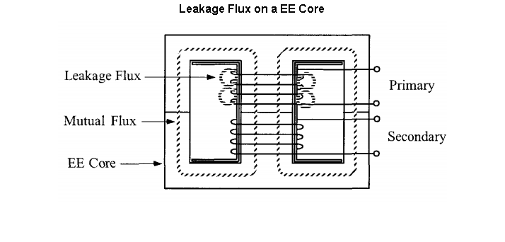
To minimize the leakage inductance, for a double E configuration, the winding vertical length should be maximized whereas horizontal length should be minimized. This is the reason why the minimum number of secondary layers possible has been selected.
The calculation of the leakage inductance for this design is shown in the Figure. The sectionalized transformer configuration is used to decrease the leakage inductance. [15]
I = imread('leakage3.png'); figure; imshow(I); title('Leakage Inductance Calculation on a EE Core','FontSize',12,'FontWeight','Bold');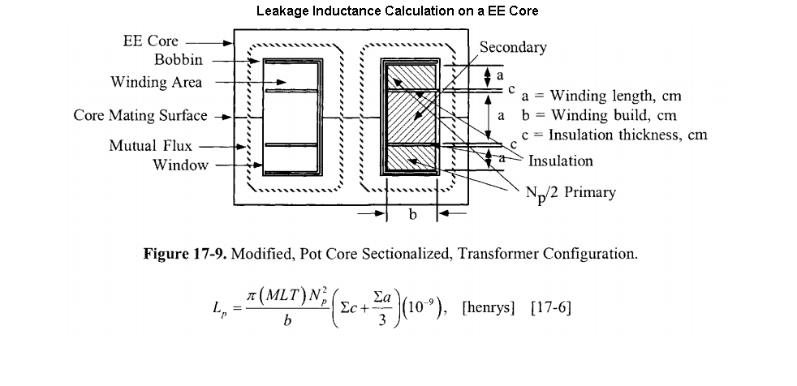
According to this, the leakage inductance is calculated as follows:
MLT = mean_length_turn_pri; % cm L1 = (pi*1e-9*MLT*Npri^2)*((primary_length1+secondary_length1)/3)/... (secondary_length2); % Henries MLT = mean_length_turn_sec; % cm L2 = (pi*1e-9*MLT*Nsec^2)*((primary_length1+secondary_length1)/3)/... (secondary_length2); % Henries L2ref = L2*turns_ratio^2; % Ohms fprintf('Primary Leakage inductance (L1) is %guH\n',L1*1e6); fprintf('Secondary Leakage inductance (L2) is %guH\n',L2*1e6); fprintf('Primary Referred Secondary Leakage inductance (L2ref) is %guH\n',L2ref*1e6);
Primary Leakage inductance (L1) is 0.996276uH Secondary Leakage inductance (L2) is 979.546uH Primary Referred Secondary Leakage inductance (L2ref) is 1.20597uH
The parasitic capacitances should also be taken into account for high frequency magnetics design, especially for square wave operation. At normal frequency, these capacitive components which occur between turns, windings, insulation etc. do not have that much of effect; however, as the frequency increases, the impedance decreases and the leakage currents start to emerge. One other effect of these capacitances are spikes on the current with high frequency square wave operation. Premature resonance and electrostatic coupling with other circuits are also some adverse effects. there are some methods which are based on some tests and empirical formulas to determine the leakage capacitances [16]. In the scope of this work, equivalent capacitance calculation is not included.
Another important effect for wire selection, proximity effect should also be considered for high frequency transformer design. Proximity effect can be defined as the emergence of eddy currents on nearby conductors when severals strans of conductors (as in this design) carry the same current at high frequencies resulting in an increase on the wire resistances. It can be eliminated by conductor bundling as the direction of magnetic fields is reversed throughout the winding and the net effect is near zero. Litz wires can be used to deal with the proximity effect as shown in the Figure.
I = imread('litz-wire-img.jpg'); figure; imshow(I); title('Litz Wire to Eliminate the Proximity Effect','FontSize',12,'FontWeight','Bold');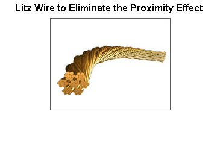
CONCLUSIONS
In this project, a high frequency, high voltage transformer is designed for an X-ray generator application. High frequency transformers in power electronics converters offer a significant reduction on the size of the converter; on the other hand, they need more attention than the classical low frequency transformers as parasitic effects start to emerge, core losses (both eddy current and hysteresis) start to increase, copper losses tend to increase due to skin and proximity effects, parasitic (leakage) inductances and capacitances become more crucial.
Core materials such as ferrites, amorphous and nanocrystalline have been suggested and used in high frequency magnetics designs. In this roject, ferrite core is selected for its relatively low core losses and low cost although they have a smaller saturation flux density.
A design procedure is suggested in which, by using the design specifications and selected core data, required number of turns on both sides, resultant fill factor, winding resiatances, copper, core and total losses and efficiency are determined. This design procedure is applied to two different sets of cores (one with EE type and one with U type) and they are compared in terms of several constraints. To eliminate the skin effect, AWG#26 wire is selected to be used with several strands in parallel to carry the rated currents of the transformer.
After the selection of the core material, type, dimensions etc which belongs to the Magnetics Inc., the actual design is achieved with the calculation of finalised parameters listed above. For the high voltage side which has a high number of turns, an iterative deisgn to determine the most suitable number of layers which turned out to be 6. A winding geometry is proposed to minimize the leakage inductances.
Temperature rise is calculated and it is understood that no cooling is required as expected. The transformer mass has also been determined.
Finally, equivalent circuit parameters of the designed transformer are calculated including resistances representing copper losses and core loss, leakage inductances on both sides and magnetizing inductance.
REFERENCES
1. https://en.wikipedia.org/wiki/X-ray_generator
2. http://www.slideshare.net/muffafa/2-components-of-xray-machine
3. https://xraykamarul.files.wordpress.com/2011/11/lecture10.pdf
4. http://www.mag-inc.com/core-conversations/core-conversations/2010/03/selecting-a-transformer-core
5. O. A. Hassan, C. Klumpner and G. Asher, "Design considerations for core material selection and operating modes for a high frequency transformer used in an isolated DC/DC converter," Power Electronics and Applications (EPE 2011), Proceedings of the 2011-14th European Conference on, Birmingham, 2011, pp. 1-11.
6. http://www.magnetec.de/fileadmin/pdf/np_powerelectronic_e.pdf
7. https://www.mag-inc.com
8. Power Design: Core Selection, Magnetics Inc.
9. http://www.powerstream.com/Wire_Size.htm
10. Curve Fit Equations for Ferrite Materials, Magnetics Inc.
11. Colonel Wm. T. McLyman, “Transformer and Inductor Design Handbook”, 3rd edition
12. http://www.rubadue.com/product/reinforced-3-layers-tca3-triple-insulated-wire
13. Mohammadamin Bahmani, “Design and Optimization of HF Transformers for High Power DC-DC Applications”, Chalmer University of Technology, 2014 Sweden
14. George Orenchak, Ferrites – “The Most Important Properties”, 1994 Soft Ferrite Users Conference
15. B. Cougo and J. W. Kolar, "Integration of Leakage Inductance in Tape Wound Core Transformers for Dual Active Bridge Converters," 2012 7th International Conference on Integrated Power Electronics Systems (CIPS), Nuremberg, 2012, pp. 1-6.
16. R. Doebbelin, C. Teichert, M. Benecke, and A. Lindemann, “Computerized Calculation of Leakage Inductance Values of Transformers”, PIERS ONLINE, VOL. 5, NO. 8, 2009
17. H. B. Ertan, K. Leblebicioğlu, O. Demirel, “An Approach to Design and Optimization of HV High Frequency Resonant Power Transformers”, ICEM 2000